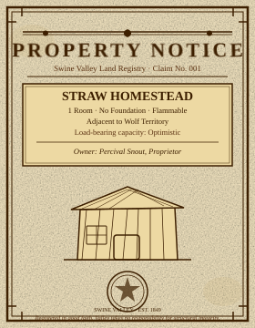
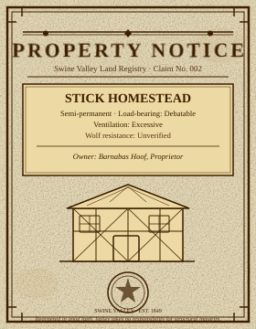
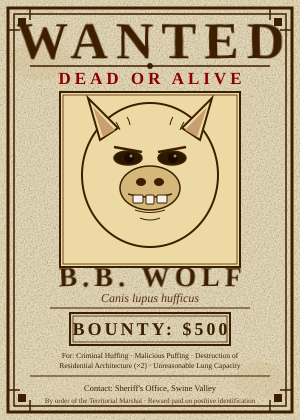
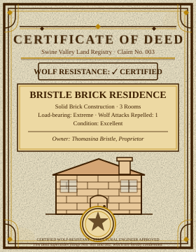

Three pig siblings have departed the family burrow to stake their own claims. Each intends to build a homestead suited to his means and ambitions. The territory watches.

Owner: Percival Snout
Construction: Straw & wishful thinking
Rooms: 1 · Foundation: None
"Adjacent to wolf territory. Flammable."

Owner: Barnabas Hoof
Construction: Lashed sticks, assorted timber
Load-bearing: Debatable
Ventilation: Excessive
"A step up. Two steps, perhaps."

Name: B.B. Wolf (alias "Big Bad")
Crimes: Criminal Huffing; Malicious Puffing; Destruction of Residential Architecture (×2); Trespassing; Unreasonable Lung Capacity.
Report #114 · Snout Residence
Responded to Lot 12 following reports of sustained huffing. Arrived to find structure had achieved horizontal configuration. Owner retrieved from rubble, shaken but ambulatory. Took only his hat. Wolf fled northwest.
Report #115 · Hoof Residence
Responded to Lot 17. Structure: ditto. Owner Hoof extracted from debris. Both Snout and Hoof now sheltering at Bristle property (Lot 22, brick construction). Recommended they stay put.
Filed by: Deputy R. Oinksworth

Owner: Cornelius Bristle
Construction: Fired brick, mortar, sound judgment
Wolf-Resistant Rating: ★★★★★
Wolf Attacks Repelled: 1
Condition: Excellent
"Inspected and found satisfactory."
The wolf, having exhausted his considerable respiratory capacity against the Bristle residence, has retreated into the western hills. Residents Snout, Hoof, and Bristle are confirmed safe, housed together at Lot 22.
The case is closed pending follow-up regarding the wolf's deviated septum claims, which this office finds unconvincing.